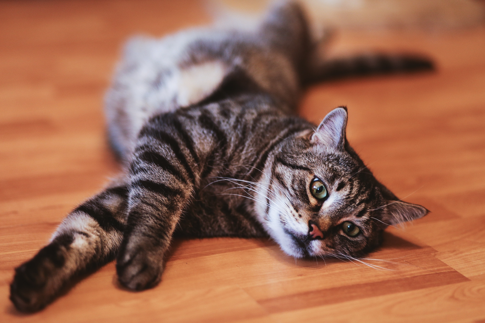

Source: https://stocksnap.io/photo/cat-laying-LPZFCLQN45
Welcome to the website dedicated to my cat! But, since I don't have a cat, this one is imaginary!
The main reasons I like cats:
- Cute
- They PURR!
- Low maintenance!
As You can see there isn't much in terms or reasons for disliking cats!
As such, please don't talk to me if You:
- Dislike cats
- Have cat allergies
If You would like to learn more about cats You can read about them on Wikipedia, by clicking
here
!